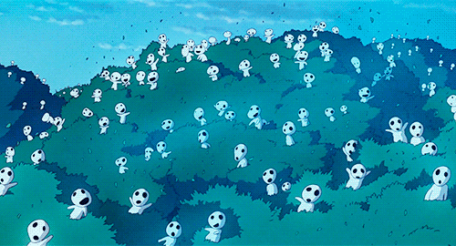
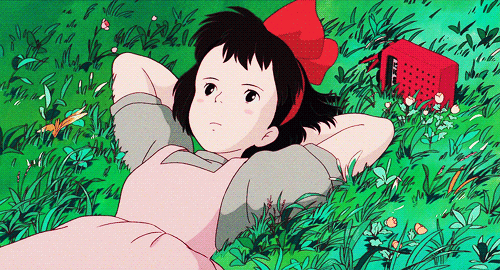
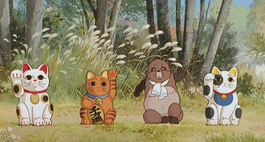

Ordena las películas por:
Conoce las películas más bellas y premiadas de Ghibli
¡Y antójate de verlas!
About Studio Ghibli

Studio Ghibli Inc. (Japanese: 株式会社スタジオジブリ, Hepburn: Kabushiki-gaisha Sutajio Jiburi) is a Japanese animation film studio headquartered in Koganei, Tokyo. It is best known for its animated feature films, and has also produced several short subjects, television commercials, and two television films.
Curious Ghibli Data
The Ghibli Name
The name "Ghibli" was chosen by Miyazaki from the Italian noun ghibli (also used in English), based on the Libyan Arabic name for hot desert wind (قبلي, 'ghiblī'), the idea being the studio would "blow a new wind through the anime industry". It also refers to an Italian aircraft, the Caproni Ca.309. Although the Italian word would be more accurately transliterated as "Giburi" (ギブリ), with a hard g sound, the studio is romanised in Japanese as Jiburi (ジブリ
Kiki's Delivery Service was Studio Ghibli's first box office hit
Although My Neighbor Totoro and Grave of the Fireflies are more famous , the monetary success came with the little witch who makes deliveries on her broom. It was released in 1989 and only got 18 million dollars, which for the studio is a lot.
Pom Poko Was The Studio's First Movie To Use Computer Graphics
These adorable tanukis were the first to be shown with such technology, back in 1992. If you haven't seen this movie yet, you really should. It is one of the most tender and with a very direct teaching.